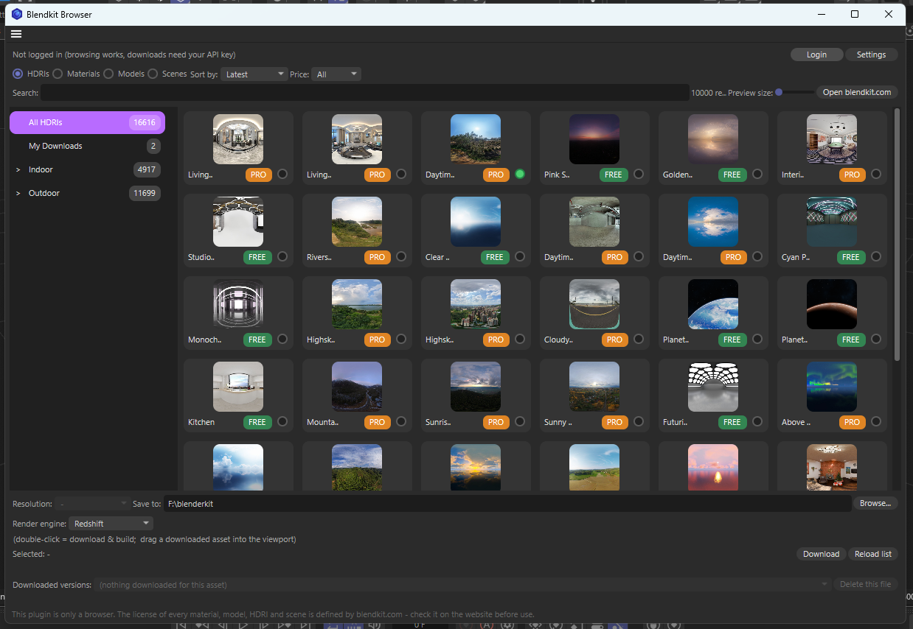

Blendkit Browser
for Cinema 4D
Browse, search, download and import Blendkit HDRIs, materials, models and scenes without leaving Cinema 4D 2027, built for the render engine you choose.

What is it?
A Cinema 4D window for the Blendkit asset library.
Blendkit (formerly BlenderKit) is an online library of Blender assets. This plugin shows that library inside Cinema 4D and turns what you download into something Cinema 4D can use: a sky for your render engine, a material, or a model merged into your scene. The assets are Blender files, so the plugin runs Blender in the background to convert them. You never have to open Blender yourself.
Features
Everything happens in one window.
Four asset types
HDRIs, Materials, Models and Scenes.
Website-like browsing
Category sidebar with counts, thumbnail grid, sort, price filter, search and a preview-size slider.
Render engine selector
Arnold, Redshift, Octane, Corona, V-Ray or C4D Standard.
Double-click to build
Download and build in one step. Green dot for assets on disk, My Downloads, and delete for downloaded versions.
Drag and drop
Drag downloaded assets into the viewport. Models are merged into the open scene instead of replacing it.
Right-click menu
Open an asset's page on blendkit.com or copy its link.
License notice
A first-run notice explains that licenses come from the website, with a small reminder under the plugin.
Installation
Cinema 4D 2027 on Windows. Blender 4.x or newer is needed in the background.
- Download the latest release zip from the Releases page, or clone the repository.
- Copy the
BlendkitBrowserfolder into Cinema 4D's plugins folder: Edit > Preferences > Open Preferences Folder, thenplugins. Remove any older copy first. - Restart Cinema 4D and open Extensions > Blendkit Browser.
- Read the license notice, tick the box and press Continue. blendkit.com opens in your browser.
- Press Login, choose Open profile page, copy your API key from the website and paste it into the plugin. Browsing works without login; downloads need the key.
BlendkitBrowser/ BlendkitBrowser.pyp plugin entry point bkit/ plugin code (UI, API, import, materials) blender_scripts/ scripts run by Blender in the background res/icon.png plugin icon
Quick start
- Pick a tab (HDRIs, Materials, Models or Scenes), a category, and search or sort.
- Choose the Render engine and, for HDRIs and materials, the Resolution.
- Double-click a card. Blender converts the asset in the background and it is built in Cinema 4D.
- Once an asset is on disk (green dot) you can drag it into the viewport.
Asset types and render engines
What you get for each type, and how it is built for each engine.
| Type | What you get |
|---|---|
| HDRI | The image is used directly (or extracted from the .blend) and set up as an Arnold Sky, Redshift Dome Light or C4D Sky, or the Octane / Corona / V-Ray equivalent. With an Arnold Sky or Redshift dome selected, the HDRI is applied to it. |
| Material | Image textures wired to the Principled BSDF (color, roughness, normal / bump, displacement, alpha, emission) are rebuilt as a material for the chosen engine. Procedural materials are not supported. |
| Model | Exported by Blender as FBX (default) or GLB and merged into the scene under a Null, with materials rebuilt for the chosen engine. |
| Scene | Same as a model, but cameras and lights are kept. Everything lands under one Null. |
| Engine | HDRI | Materials and models |
|---|---|---|
| Arnold | Arnold Sky (via C4DtoA) | A C4D material is built and converted with Arnold's own commands. |
| Redshift | RS Dome Light | OpenPBR node material; falls back to Redshift Standard, then C4D Standard. |
| Octane, Corona, V-Ray | The renderer's own environment, sky or dome command, then the texture slot is filled. | A C4D material is built and the renderer's own converter command is run. If it is not found you get a C4D Standard material and a note. |
| C4D Standard | C4D Sky | C4D Standard material. |
How it works
- The asset file (a
.blendor an image) is downloaded with your own API key. - Blender runs in the background with the scripts in
blender_scripts/and extracts the HDRI, the material textures or an FBX / GLB model. - The result is cached in the folder set in Settings > Save assets to.
- The plugin imports it into Cinema 4D and builds the materials for the selected render engine.
FAQ and troubleshooting
The plugin does not appear
Check the Cinema 4D Console at startup for the line Blendkit Browser v... registered. Remove any older copy of the plugin folder and restart.
Downloads fail or an asset is locked
A Blendkit account and API key are required, and your plan decides what you can download. PRO / locked assets are not bypassed.
"Blender not found"
Install Blender 4.x or newer, or set its path in Settings.
A material looks wrong
Try another render engine and check the color space of the textures. Color space and engine setups may not be correct.
A material is missing or plain
Procedural Blender materials are not supported yet.
Thumbnails are missing
Thumbnails in WebP format cannot be read by Cinema 4D.
Where are the logs?
Settings > Diagnostics writes the raw API responses, and everything is logged to blendkit.log. Both are in Cinema 4D's prefs/BlendkitBrowser/ folder.
What is the plugin ID?
PLUGIN_ID = 1000011 at the top of BlendkitBrowser.pyp is an unregistered development ID. Register your own free ID at developers.maxon.net before distributing a modified build.
Status and limitations
blendkit.log.- The Octane, Corona and V-Ray setups depend on commands from those renderers and fall back to C4D Standard materials when a command is missing.
- Procedural materials, animation and Geometry Nodes assets are not supported.
- Windows only.
- The plugin uses the same public API conventions as the official Blender add-on, with your own key. Please check Blendkit's terms for third-party tools.